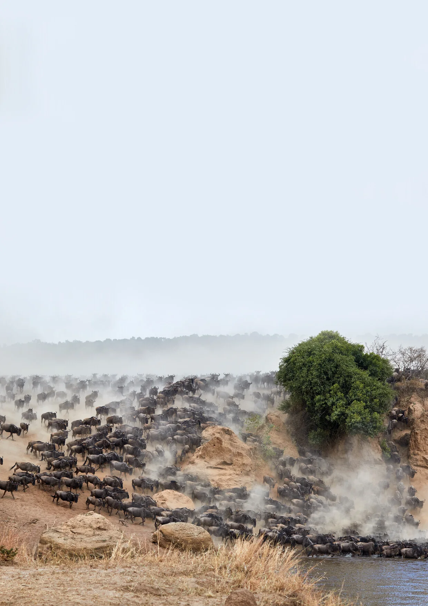
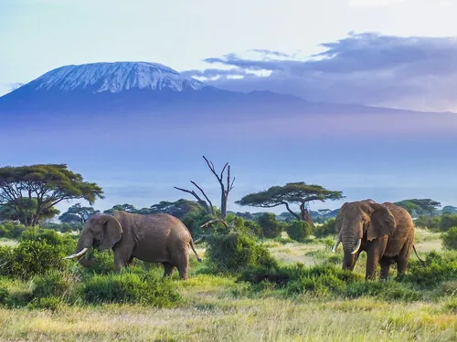
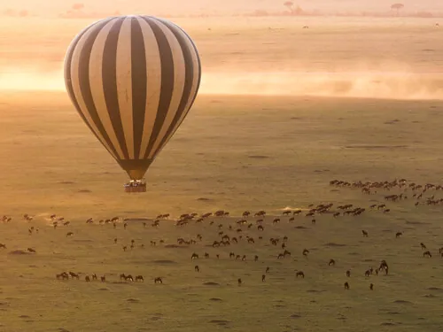
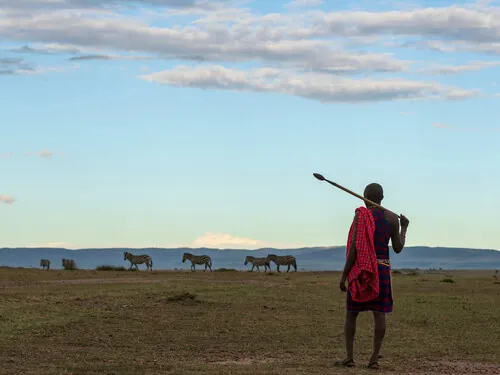
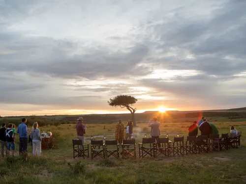
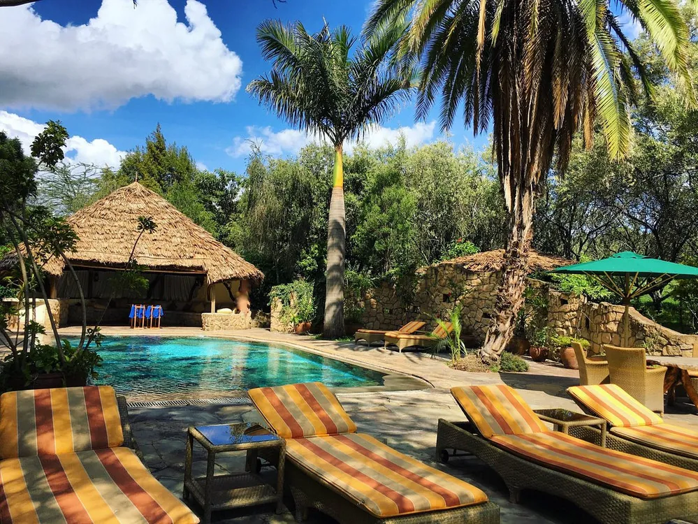
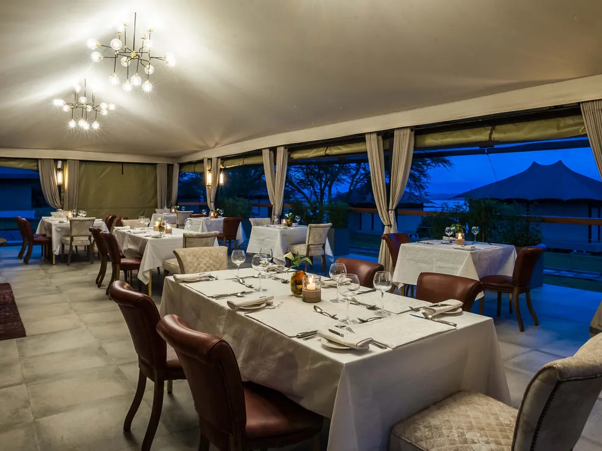
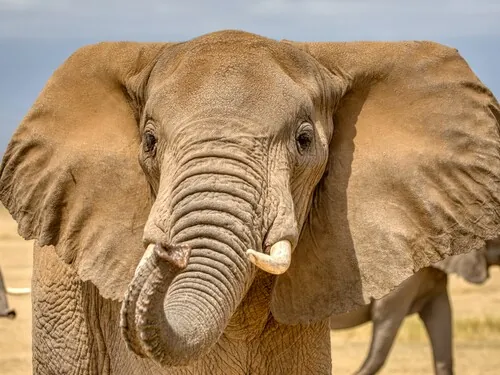

Before sunrise
Warm layers, coffee, first light and a quiet departure from camp.

Kenya · private safari experiences
A safari is more than seeing animals. It is the rhythm of dawn game drives, long horizons, quiet moments around camp, and the anticipation of what may appear around the next bend.
What a safari is actually about
The best days have a natural rhythm: leave while the air is cool, follow fresh tracks with your guide, return for breakfast or continue with a packed lunch, slow down in the heat of the afternoon, then head out again as the light softens.
Across the current Kenya itineraries, that rhythm is built around the Masai Mara, Lake Nakuru, Lake Naivasha and Amboseli, with stays ranging from classic lodges to intimate tented camps.
Warm layers, coffee, first light and a quiet departure from camp.
Predators may still be active and the landscape is at its most photogenic.
Lunch, rest, a pool, a book, or simply time to take in the surroundings.
Return to the plains as temperatures fall and wildlife becomes active again.
Dinner, stories from the day and the sounds of the bush beyond the lights.
Lion, leopard, cheetah, elephant, giraffe, buffalo and more.
Open savannah, escarpments, lakes, woodland and Kilimanjaro views.
Tented camps and lodges place the experience at the centre of the journey.
The guide turns sightings into context, behaviour and understanding.
Where the journey unfolds
Instead of treating every stop as interchangeable, the experience changes as the landscape changes. Select a destination to see what makes it distinct.
Iconic safari country
Classic East African savannah with exceptional concentrations of wildlife and a strong reputation for big-cat sightings.
An example journey
This seven-day flow mirrors the longer Kenya itineraries and shows how a multi-region safari can build contrast without turning every day into a transfer.
Begin with the strongest wildlife immersion: game drives, big-cat country and the option of a balloon morning.
Shift into Rift Valley scenery and a more compact park environment before continuing south.
A slower lake setting creates breathing room between the denser game-drive days.
Finish with elephants, open plains and the possibility of Kilimanjaro appearing beyond the park.
Return to the city and connect onward with the safari experience still fresh.

Elephants can fill the foreground while the mountain holds the horizon.


Where you stay matters
The current itinerary set spans classic lodges, luxury tented camps and conservancy stays. The right stay changes privacy, atmosphere and how much of the day feels connected to the landscape.

Canvas, open air and a stronger sense that the bush is just beyond your room.
Examples in current itineraries: Mara Ngenche, Elephant Pepper, Olare Mara Kempinski, Emayian.
A softer tempo between major game reserves, with time to rest and enjoy the property.
Examples in current itineraries: Chui Lodge, Enashipai Resort & Spa, Lake Naivasha Sopa.
Views and elevated settings can make even the transition nights feel like a destination.
Examples in current itineraries: The Cliff, Mbweha Camp, Sarova Lion Hill.Find your safari style
This does not calculate a price. It helps shape the experience before choosing a specific itinerary.
Moments worth building around
Optional experiences work best when they deepen the trip rather than fill every hour.
Rise before dawn and watch the savannah open beneath you as the light changes.
Cooler air, active wildlife and softer light make this one of the most rewarding times to be out.
Add a human dimension to the landscape with a visit that is planned respectfully and transparently.
Some of the strongest safari memories happen when the schedule leaves room for stillness.
Before you go
These are the practical decisions worth making before the itinerary is locked.
Road travel shows more of Kenya and keeps the journey continuous. A fly-in approach reduces long transfer days and can make a shorter safari feel more relaxed.
For a short trip, fewer regions usually means more time on safari and less time checking in and out. Longer trips can use different landscapes to create contrast.
The current itinerary set commonly includes accommodation, specified meals, park fees, transportation, professional guiding, game drives, drinking water and airport pickup/drop-off. Exact inclusions should always be confirmed for the final itinerary.
Wildlife does not follow a timetable. Good safari days leave room for the guide to change pace, remain at a sighting or move when conditions suggest something better elsewhere.
